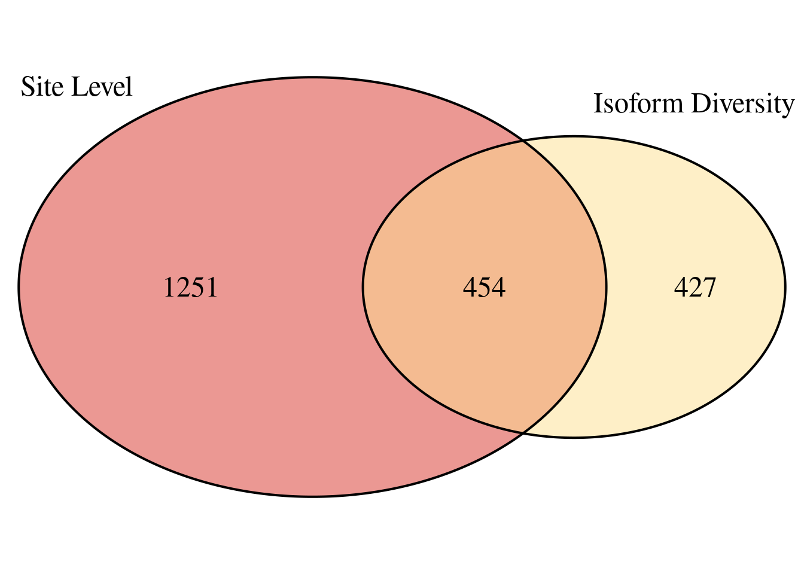
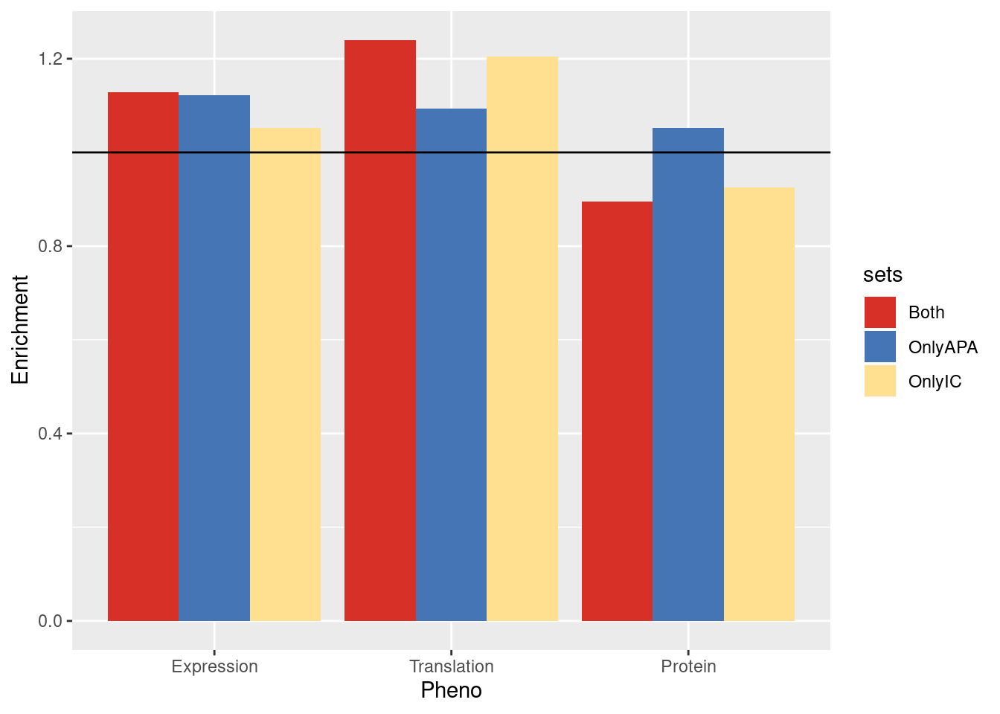
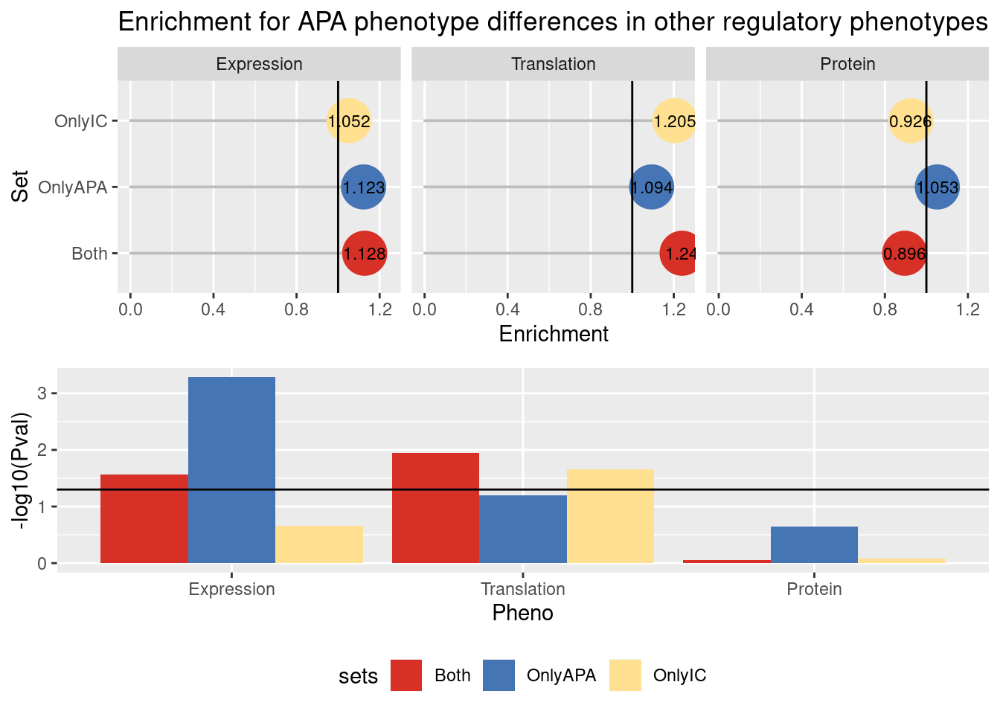
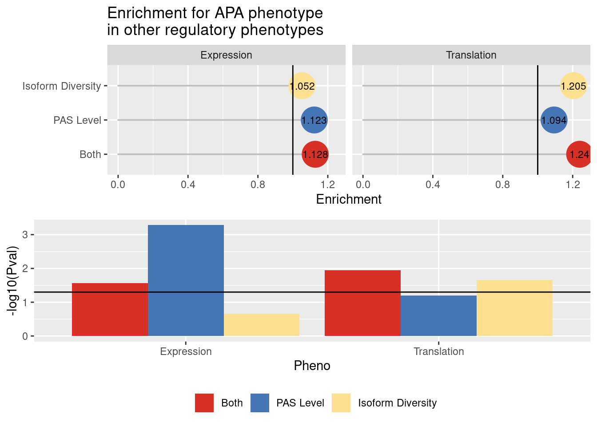

dAPA dIC together and sep
Briana Mittleman
5/7/2020
Last updated: 2020-07-02
Checks: 7 0
Knit directory: Comparative_APA/analysis/
This reproducible R Markdown analysis was created with workflowr (version 1.6.0). The Checks tab describes the reproducibility checks that were applied when the results were created. The Past versions tab lists the development history.
Great! Since the R Markdown file has been committed to the Git repository, you know the exact version of the code that produced these results.
Great job! The global environment was empty. Objects defined in the global environment can affect the analysis in your R Markdown file in unknown ways. For reproduciblity it’s best to always run the code in an empty environment.
The command set.seed(20190902) was run prior to running the code in the R Markdown file. Setting a seed ensures that any results that rely on randomness, e.g. subsampling or permutations, are reproducible.
Great job! Recording the operating system, R version, and package versions is critical for reproducibility.
Nice! There were no cached chunks for this analysis, so you can be confident that you successfully produced the results during this run.
Great job! Using relative paths to the files within your workflowr project makes it easier to run your code on other machines.
Great! You are using Git for version control. Tracking code development and connecting the code version to the results is critical for reproducibility. The version displayed above was the version of the Git repository at the time these results were generated.
Note that you need to be careful to ensure that all relevant files for the analysis have been committed to Git prior to generating the results (you can use wflow_publish or wflow_git_commit). workflowr only checks the R Markdown file, but you know if there are other scripts or data files that it depends on. Below is the status of the Git repository when the results were generated:
Ignored files:
Ignored: .DS_Store
Ignored: .Rhistory
Ignored: .Rproj.user/
Ignored: code/chimp_log/
Ignored: code/human_log/
Ignored: data/.DS_Store
Ignored: data/TrialFiltersMeta.txt.sb-9845453e-R58Y0Q/
Ignored: data/mediation_prot/
Ignored: data/metadata_HCpanel.txt.sb-284518db-RGf0kd/
Ignored: data/metadata_HCpanel.txt.sb-a5794dd2-i594qs/
Ignored: output/.DS_Store
Untracked files:
Untracked: ._.DS_Store
Untracked: Chimp/
Untracked: GEO/
Untracked: Human/
Untracked: analysis/AREstabilityScores.Rmd
Untracked: analysis/AllLoc_effectSizeCor.Rmd
Untracked: analysis/Conservation_bydAPAset.Rmd
Untracked: analysis/CrossChimpThreePrime.Rmd
Untracked: analysis/DiffTransProtvsExpression.Rmd
Untracked: analysis/DiffUsedUTR.Rmd
Untracked: analysis/GvizPlots.Rmd
Untracked: analysis/HandC.TvN
Untracked: analysis/PhenotypeOverlap10.Rmd
Untracked: analysis/ResultsNoUnlifted.md
Untracked: analysis/annotationBias.Rmd
Untracked: analysis/assessReadQual.Rmd
Untracked: analysis/diffExpressionPantro6.Rmd
Untracked: code/._AlignmentScores.sh
Untracked: code/._BothFCMM.sh
Untracked: code/._BothFCMMPrim.sh
Untracked: code/._BothFCnewOInclusive.sh
Untracked: code/._ChimpStarMM2.sh
Untracked: code/._ClassifyLeafviz.sh
Untracked: code/._ClosestorthoEx.sh
Untracked: code/._Config_chimp.yaml
Untracked: code/._Config_chimp_full.yaml
Untracked: code/._Config_human.yaml
Untracked: code/._ConvertJunc2Bed.sh
Untracked: code/._CountNucleotides.py
Untracked: code/._CrossMapChimpRNA.sh
Untracked: code/._CrossMapThreeprime.sh
Untracked: code/._DiffSplice.sh
Untracked: code/._DiffSplicePlots.sh
Untracked: code/._DiffSplicePlots_gencode.sh
Untracked: code/._DiffSplice_gencode.sh
Untracked: code/._DiffSplice_removebad.sh
Untracked: code/._Filter255MM.sh
Untracked: code/._FilterPrimSec.sh
Untracked: code/._FindIntronForDomPAS.sh
Untracked: code/._FindIntronForDomPAS_DF.sh
Untracked: code/._GetMAPQscore.py
Untracked: code/._GetSecondaryMap.py
Untracked: code/._Lift5perPAS.sh
Untracked: code/._LiftFinalChimpJunc2Human.sh
Untracked: code/._LiftOrthoPAS2chimp.sh
Untracked: code/._MapBadSamples.sh
Untracked: code/._MismatchNumbers.sh
Untracked: code/._PAS_ATTAAA.sh
Untracked: code/._PAS_ATTAAA_df.sh
Untracked: code/._PAS_seqExpanded.sh
Untracked: code/._PASsequences.sh
Untracked: code/._PASsequences_DF.sh
Untracked: code/._PlotNuclearUsagebySpecies.R
Untracked: code/._PlotNuclearUsagebySpecies_DF.R
Untracked: code/._QuantMergedClusters.sh
Untracked: code/._RNATranscriptDTplot.sh
Untracked: code/._ReverseLiftFilter.R
Untracked: code/._RunFixLeafCluster.sh
Untracked: code/._RunNegMCMediation.sh
Untracked: code/._RunNegMCMediationDF.sh
Untracked: code/._RunPosMCMediationDF.err
Untracked: code/._RunPosMCMediationDF.sh
Untracked: code/._SAF2Bed.py
Untracked: code/._Snakefile
Untracked: code/._SnakefilePAS
Untracked: code/._SnakefilePASfilt
Untracked: code/._SortIndexBadSamples.sh
Untracked: code/._StarMM2.sh
Untracked: code/._TestFC.sh
Untracked: code/._assignPeak2Intronicregion
Untracked: code/._assignPeak2Intronicregion.sh
Untracked: code/._bed215upbed.py
Untracked: code/._bed2Bedbothstrand.py
Untracked: code/._bed2SAF_gen.py
Untracked: code/._buildIndecpantro5
Untracked: code/._buildIndecpantro5.sh
Untracked: code/._buildLeafviz.sh
Untracked: code/._buildLeafviz_leadAnno.sh
Untracked: code/._buildStarIndex.sh
Untracked: code/._chimpChromprder.sh
Untracked: code/._chimpMultiCov.sh
Untracked: code/._chimpMultiCov255.sh
Untracked: code/._chimpMultiCovInclusive.sh
Untracked: code/._chooseSignalSite.py
Untracked: code/._cleanbed2saf.py
Untracked: code/._cluster.json
Untracked: code/._cluster2bed.py
Untracked: code/._clusterLiftReverse.sh
Untracked: code/._clusterLiftReverse_removebad.sh
Untracked: code/._clusterLiftprimary.sh
Untracked: code/._clusterLiftprimary_removebad.sh
Untracked: code/._converBam2Junc.sh
Untracked: code/._converBam2Junc_removeBad.sh
Untracked: code/._extraSnakefiltpas
Untracked: code/._extractPhyloReg.py
Untracked: code/._extractPhyloRegGene.py
Untracked: code/._extractPhylopGeneral.ph
Untracked: code/._extractPhylopGeneral.py
Untracked: code/._extractPhylopReg200down.py
Untracked: code/._extractPhylopReg200up.py
Untracked: code/._filter5percPAS.py
Untracked: code/._filterNumChroms.py
Untracked: code/._filterPASforMP.py
Untracked: code/._filterPostLift.py
Untracked: code/._filterPrimaryread.py
Untracked: code/._filterSecondaryread.py
Untracked: code/._fixExonFC.py
Untracked: code/._fixFCheadforExp.py
Untracked: code/._fixLeafCluster.py
Untracked: code/._fixLiftedJunc.py
Untracked: code/._fixUTRexonanno.py
Untracked: code/._formathg38Anno.py
Untracked: code/._formatpantro6Anno.py
Untracked: code/._getRNAseqMapStats.sh
Untracked: code/._hg19MapStats.sh
Untracked: code/._humanChromorder.sh
Untracked: code/._humanMultiCov.sh
Untracked: code/._humanMultiCov255.sh
Untracked: code/._humanMultiCov_inclusive.sh
Untracked: code/._intersectLiftedPAS.sh
Untracked: code/._liftJunctionFiles.sh
Untracked: code/._liftPAS19to38.sh
Untracked: code/._liftedchimpJunc2human.sh
Untracked: code/._makeNuclearDapaplots.sh
Untracked: code/._makeNuclearDapaplots_DF.sh
Untracked: code/._makeSamplyGroupsHuman_TvN.py
Untracked: code/._mapRNAseqhg19.sh
Untracked: code/._mapRNAseqhg19_newPipeline.sh
Untracked: code/._maphg19.sh
Untracked: code/._maphg19_subjunc.sh
Untracked: code/._mediation_test.R
Untracked: code/._mergeChimp3prime_inhg38.sh
Untracked: code/._mergeandBWRNAseq.sh
Untracked: code/._mergedBam2BW.sh
Untracked: code/._nameClusters.py
Untracked: code/._negativeMediation_montecarlo.R
Untracked: code/._negativeMediation_montecarloDF.R
Untracked: code/._numMultimap.py
Untracked: code/._overlapMMandOrthoexon.sh
Untracked: code/._overlapPASandOrthoexon.sh
Untracked: code/._overlapapaQTLPAS.sh
Untracked: code/._parseHg38.py
Untracked: code/._postiveMediation_montecarlo_DF.R
Untracked: code/._prepareCleanLiftedFC_5perc4LC.py
Untracked: code/._prepareLeafvizAnno.sh
Untracked: code/._preparePAS4lift.py
Untracked: code/._primaryLift.sh
Untracked: code/._processhg38exons.py
Untracked: code/._quantJunc.sh
Untracked: code/._quantJunc_TEST.sh
Untracked: code/._quantJunc_removeBad.sh
Untracked: code/._quantLiftedPASPrimary.sh
Untracked: code/._quantMerged_seperatly.sh
Untracked: code/._recLiftchim2human.sh
Untracked: code/._revLiftPAShg38to19.sh
Untracked: code/._reverseLift.sh
Untracked: code/._runCheckReverseLift.sh
Untracked: code/._runChimpDiffIso.sh
Untracked: code/._runCountNucleotides.sh
Untracked: code/._runFilterNumChroms.sh
Untracked: code/._runHumanDiffIso.sh
Untracked: code/._runNuclearDiffIso_DF.sh
Untracked: code/._runNuclearDifffIso.sh
Untracked: code/._runTotalDiffIso.sh
Untracked: code/._run_chimpverifybam.sh
Untracked: code/._run_verifyBam.sh
Untracked: code/._snakemake.batch
Untracked: code/._snakemakePAS.batch
Untracked: code/._snakemakePASchimp.batch
Untracked: code/._snakemakePAShuman.batch
Untracked: code/._snakemake_chimp.batch
Untracked: code/._snakemake_human.batch
Untracked: code/._snakemakefiltPAS.batch
Untracked: code/._snakemakefiltPAS_chimp
Untracked: code/._snakemakefiltPAS_chimp.sh
Untracked: code/._snakemakefiltPAS_human.sh
Untracked: code/._spliceSite2Fasta.py
Untracked: code/._submit-snakemake-chimp.sh
Untracked: code/._submit-snakemake-human.sh
Untracked: code/._submit-snakemakePAS-chimp.sh
Untracked: code/._submit-snakemakePAS-human.sh
Untracked: code/._submit-snakemakefiltPAS-chimp.sh
Untracked: code/._submit-snakemakefiltPAS-human.sh
Untracked: code/._subset_diffisopheno_Nuclear_HvC.py
Untracked: code/._subset_diffisopheno_Nuclear_HvC_DF.py
Untracked: code/._subset_diffisopheno_Total_HvC.py
Untracked: code/._threeprimeOrthoFC.sh
Untracked: code/._transcriptDTplotsNuclear.sh
Untracked: code/._verifyBam4973.sh
Untracked: code/._verifyBam4973inHuman.sh
Untracked: code/._wrap_chimpverifybam.sh
Untracked: code/._wrap_verifyBam.sh
Untracked: code/._writeMergecode.py
Untracked: code/.snakemake/
Untracked: code/ALLPAS_sequenceDF.err
Untracked: code/ALLPAS_sequenceDF.out
Untracked: code/AlignmentScores.err
Untracked: code/AlignmentScores.out
Untracked: code/AlignmentScores.sh
Untracked: code/BothFCMM.err
Untracked: code/BothFCMM.out
Untracked: code/BothFCMM.sh
Untracked: code/BothFCMMPrim.err
Untracked: code/BothFCMMPrim.out
Untracked: code/BothFCMMPrim.sh
Untracked: code/BothFCnewOInclusive.sh
Untracked: code/BothFCnewOInclusive.sh.err
Untracked: code/BothFCnewOInclusive.sh.out
Untracked: code/ChimpStarMM2.err
Untracked: code/ChimpStarMM2.out
Untracked: code/ChimpStarMM2.sh
Untracked: code/ClassifyLeafviz.sh
Untracked: code/ClosestorthoEx.err
Untracked: code/ClosestorthoEx.out
Untracked: code/ClosestorthoEx.sh
Untracked: code/Config_chimp.yaml
Untracked: code/Config_chimp_full.yaml
Untracked: code/Config_human.yaml
Untracked: code/ConvertJunc2Bed.err
Untracked: code/ConvertJunc2Bed.out
Untracked: code/ConvertJunc2Bed.sh
Untracked: code/CountNucleotides.py
Untracked: code/CrossMapChimpRNA.sh
Untracked: code/CrossMapThreeprime.sh
Untracked: code/CrossmapChimp3prime.err
Untracked: code/CrossmapChimp3prime.out
Untracked: code/CrossmapChimpRNA.err
Untracked: code/CrossmapChimpRNA.out
Untracked: code/DTUTR.sh
Untracked: code/DiffDom_RNAmotif_4.err
Untracked: code/DiffDom_RNAmotif_4.out
Untracked: code/DiffDom_RNAmotif_4.sh
Untracked: code/DiffDom_RNAmotif_4_splitDE.err
Untracked: code/DiffDom_RNAmotif_4_splitDE.out
Untracked: code/DiffDom_RNAmotif_4_splitDE.sh
Untracked: code/DiffSplice.err
Untracked: code/DiffSplice.out
Untracked: code/DiffSplice.sh
Untracked: code/DiffSplicePlots.err
Untracked: code/DiffSplicePlots.out
Untracked: code/DiffSplicePlots.sh
Untracked: code/DiffSplicePlots_gencode.sh
Untracked: code/DiffSplice_gencode.sh
Untracked: code/DiffSplice_removebad.err
Untracked: code/DiffSplice_removebad.out
Untracked: code/DiffSplice_removebad.sh
Untracked: code/Filter255.err
Untracked: code/Filter255.out
Untracked: code/Filter255MM.sh
Untracked: code/FilterPrimSec.err
Untracked: code/FilterPrimSec.out
Untracked: code/FilterPrimSec.sh
Untracked: code/FilterReverseLift.err
Untracked: code/FilterReverseLift.out
Untracked: code/FindDomXCutoff.py
Untracked: code/FindIntronForDomPAS.err
Untracked: code/FindIntronForDomPAS.out
Untracked: code/FindIntronForDomPAS.sh
Untracked: code/FindIntronForDomPAS_DF.sh
Untracked: code/GencodeDiffSplice.err
Untracked: code/GencodeDiffSplice.out
Untracked: code/GetMAPQscore.py
Untracked: code/GetSecondaryMap.py
Untracked: code/GetTopminus2Usage.py
Untracked: code/H3K36me3DTplot.err
Untracked: code/H3K36me3DTplot.out
Untracked: code/H3K36me3DTplot.sh
Untracked: code/H3K36me3DTplot_DiffIso.err
Untracked: code/H3K36me3DTplot_DiffIso.out
Untracked: code/H3K36me3DTplot_DiffIso.sh
Untracked: code/H3K36me3DTplot_Specific.err
Untracked: code/H3K36me3DTplot_Specific.out
Untracked: code/H3K36me3DTplot_Specific.sh
Untracked: code/H3K36me3DTplot_distalPAS.err
Untracked: code/H3K36me3DTplot_distalPAS.out
Untracked: code/H3K36me3DTplot_distalPAS.sh
Untracked: code/H3K36me3DTplot_transcript.err
Untracked: code/H3K36me3DTplot_transcript.out
Untracked: code/H3K36me3DTplot_transcript.sh
Untracked: code/H3K36me3DTplotwide.err
Untracked: code/H3K36me3DTplotwide.out
Untracked: code/H3K36me3DTplotwide.sh
Untracked: code/H3K9me3DTplot_transcript.err
Untracked: code/H3K9me3DTplot_transcript.out
Untracked: code/H3K9me3DTplot_transcript.sh
Untracked: code/H3K9me3_processandDT.sh
Untracked: code/HchromOrder.err
Untracked: code/HchromOrder.out
Untracked: code/InfoContentShannon.py
Untracked: code/InfoContentbyInd.py
Untracked: code/IntersectMMandOrtho.err
Untracked: code/IntersectMMandOrtho.out
Untracked: code/IntersectPASandOrtho.err
Untracked: code/IntersectPASandOrtho.out
Untracked: code/JunctionLift.err
Untracked: code/JunctionLift.out
Untracked: code/JunctionLiftFinalChimp.err
Untracked: code/JunctionLiftFinalChimp.out
Untracked: code/Lift5perPAS.sh
Untracked: code/Lift5perPASbed.err
Untracked: code/Lift5perPASbed.out
Untracked: code/LiftClustersFirst.err
Untracked: code/LiftClustersFirst.out
Untracked: code/LiftClustersFirst_remove.err
Untracked: code/LiftClustersFirst_remove.out
Untracked: code/LiftClustersSecond.err
Untracked: code/LiftClustersSecond.out
Untracked: code/LiftClustersSecond_remove.err
Untracked: code/LiftClustersSecond_remove.out
Untracked: code/LiftFinalChimpJunc2Human.sh
Untracked: code/LiftOrthoPAS2chimp.sh
Untracked: code/LiftorthoPAS.err
Untracked: code/LiftorthoPASt.out
Untracked: code/Log.out
Untracked: code/MapBadSamples.err
Untracked: code/MapBadSamples.out
Untracked: code/MapBadSamples.sh
Untracked: code/MapStats.err
Untracked: code/MapStats.out
Untracked: code/MaxEntCode/
Untracked: code/MergeClusters.err
Untracked: code/MergeClusters.out
Untracked: code/MergeClusters.sh
Untracked: code/MismatchNumbers.err
Untracked: code/MismatchNumbers.out
Untracked: code/MismatchNumbers.sh
Untracked: code/NuclearDTUTR.err
Untracked: code/NuclearDTUTRt.out
Untracked: code/NuclearPlotsDEandDiffDom_4.err
Untracked: code/NuclearPlotsDEandDiffDom_4.out
Untracked: code/NuclearPlotsDEandDiffDom_4.sh
Untracked: code/PAS_ATTAAA.err
Untracked: code/PAS_ATTAAA.out
Untracked: code/PAS_ATTAAA.sh
Untracked: code/PAS_ATTAAADF.err
Untracked: code/PAS_ATTAAADF.out
Untracked: code/PAS_ATTAAA_df.sh
Untracked: code/PAS_seqExpanded.sh
Untracked: code/PAS_sequence.err
Untracked: code/PAS_sequence.out
Untracked: code/PAS_sequenceDF.err
Untracked: code/PAS_sequenceDF.out
Untracked: code/PASexpanded_sequenceDF.err
Untracked: code/PASexpanded_sequenceDF.out
Untracked: code/PASsequences.sh
Untracked: code/PASsequences_DF.sh
Untracked: code/PlotNuclearUsagebySpecies.R
Untracked: code/PlotNuclearUsagebySpecies_DF.R
Untracked: code/PlotNuclearUsagebySpecies_DF_4DIC.R
Untracked: code/PlotNuclearUsagebySpecies_DF_DEout.R
Untracked: code/QuantMergeClusters
Untracked: code/QuantMergeClusters.err
Untracked: code/QuantMergeClusters.out
Untracked: code/QuantMergedClusters.sh
Untracked: code/RNATranscriptDTplot.err
Untracked: code/RNATranscriptDTplot.out
Untracked: code/RNATranscriptDTplot.sh
Untracked: code/RNAmotif_PAS.err
Untracked: code/RNAmotif_PAS.out
Untracked: code/RNAmotif_PAS.sh
Untracked: code/RNAmotif_PAS_chimp.err
Untracked: code/RNAmotif_PAS_chimp.out
Untracked: code/RNAmotif_PAS_chimp.sh
Untracked: code/Rev_liftoverPAShg19to38.err
Untracked: code/Rev_liftoverPAShg19to38.out
Untracked: code/ReverseLiftFilter.R
Untracked: code/RunFixCluster.err
Untracked: code/RunFixCluster.out
Untracked: code/RunFixLeafCluster.sh
Untracked: code/RunNegMCMediation.err
Untracked: code/RunNegMCMediation.sh
Untracked: code/RunNegMCMediationDF.err
Untracked: code/RunNegMCMediationDF.out
Untracked: code/RunNegMCMediationDF.sh
Untracked: code/RunNegMCMediationr.out
Untracked: code/RunNewDom.err
Untracked: code/RunNewDom.out
Untracked: code/RunPosMCMediation.err
Untracked: code/RunPosMCMediation.sh
Untracked: code/RunPosMCMediationDF.err
Untracked: code/RunPosMCMediationDF.out
Untracked: code/RunPosMCMediationDF.sh
Untracked: code/RunPosMCMediationr.out
Untracked: code/SAF215upbed_gen.py
Untracked: code/SAF2Bed.py
Untracked: code/Snakefile
Untracked: code/SnakefilePAS
Untracked: code/SnakefilePASfilt
Untracked: code/SortIndexBadSamples.err
Untracked: code/SortIndexBadSamples.out
Untracked: code/SortIndexBadSamples.sh
Untracked: code/StarMM2.err
Untracked: code/StarMM2.out
Untracked: code/StarMM2.sh
Untracked: code/TestFC.err
Untracked: code/TestFC.out
Untracked: code/TestFC.sh
Untracked: code/TotalTranscriptDTplot.err
Untracked: code/TotalTranscriptDTplot.out
Untracked: code/UTR2FASTA.py
Untracked: code/Upstream10Bases_general.py
Untracked: code/allPASSeq_df.sh
Untracked: code/apaQTLsnake.err
Untracked: code/apaQTLsnake.out
Untracked: code/apaQTLsnakePAS.err
Untracked: code/apaQTLsnakePAS.out
Untracked: code/apaQTLsnakePAShuman.err
Untracked: code/apaQTLsnakefiltPAS.err
Untracked: code/apaQTLsnakefiltPAS.out
Untracked: code/assignPeak2Intronicregion.err
Untracked: code/assignPeak2Intronicregion.out
Untracked: code/assignPeak2Intronicregion.sh
Untracked: code/bam2junc.err
Untracked: code/bam2junc.out
Untracked: code/bam2junc_remove.err
Untracked: code/bam2junc_remove.out
Untracked: code/bed215upbed.py
Untracked: code/bed2Bedbothstrand.py
Untracked: code/bed2SAF_gen.py
Untracked: code/bed2saf.py
Untracked: code/bg_to_cov.py
Untracked: code/buildIndecpantro5
Untracked: code/buildIndecpantro5.sh
Untracked: code/buildLeafviz.err
Untracked: code/buildLeafviz.out
Untracked: code/buildLeafviz.sh
Untracked: code/buildLeafviz_leadAnno.sh
Untracked: code/buildLeafviz_leafanno.err
Untracked: code/buildLeafviz_leafanno.out
Untracked: code/buildStarIndex.sh
Untracked: code/callPeaksYL.py
Untracked: code/chimpChromprder.sh
Untracked: code/chimpMultiCov.err
Untracked: code/chimpMultiCov.out
Untracked: code/chimpMultiCov.sh
Untracked: code/chimpMultiCov255.sh
Untracked: code/chimpMultiCovInclusive.err
Untracked: code/chimpMultiCovInclusive.out
Untracked: code/chimpMultiCovInclusive.sh
Untracked: code/chooseAnno2Bed.py
Untracked: code/chooseAnno2SAF.py
Untracked: code/chooseSignalSite.py
Untracked: code/chromOrder.err
Untracked: code/chromOrder.out
Untracked: code/classifyLeafviz.err
Untracked: code/classifyLeafviz.out
Untracked: code/cleanbed2saf.py
Untracked: code/cluster.json
Untracked: code/cluster2bed.py
Untracked: code/clusterLiftReverse.sh
Untracked: code/clusterLiftReverse_removebad.sh
Untracked: code/clusterLiftprimary.sh
Untracked: code/clusterLiftprimary_removebad.sh
Untracked: code/clusterPAS.json
Untracked: code/clusterfiltPAS.json
Untracked: code/comands2Mege.sh
Untracked: code/converBam2Junc.sh
Untracked: code/converBam2Junc_removeBad.sh
Untracked: code/convertNumeric.py
Untracked: code/extraSnakefiltpas
Untracked: code/extractPhaastConGeneral.py
Untracked: code/extractPhyloReg.py
Untracked: code/extractPhyloRegGene.py
Untracked: code/extractPhylopGeneral.py
Untracked: code/extractPhylopReg200down.py
Untracked: code/extractPhylopReg200up.py
Untracked: code/filter5perc.R
Untracked: code/filter5percPAS.py
Untracked: code/filter5percPheno.py
Untracked: code/filterBamforMP.pysam2_gen.py
Untracked: code/filterJuncChroms.err
Untracked: code/filterJuncChroms.out
Untracked: code/filterMissprimingInNuc10_gen.py
Untracked: code/filterNumChroms.py
Untracked: code/filterPASforMP.py
Untracked: code/filterPostLift.py
Untracked: code/filterPrimaryread.py
Untracked: code/filterSAFforMP_gen.py
Untracked: code/filterSecondaryread.py
Untracked: code/filterSortBedbyCleanedBed_gen.R
Untracked: code/filterpeaks.py
Untracked: code/fixExonFC.py
Untracked: code/fixFChead.py
Untracked: code/fixFChead_bothfrac.py
Untracked: code/fixFCheadforExp.py
Untracked: code/fixLeafCluster.py
Untracked: code/fixLiftedJunc.py
Untracked: code/fixUTRexonanno.py
Untracked: code/formathg38Anno.py
Untracked: code/generateStarIndex.err
Untracked: code/generateStarIndex.out
Untracked: code/generateStarIndexHuman.err
Untracked: code/generateStarIndexHuman.out
Untracked: code/getAlloverlap.py
Untracked: code/getRNAseqMapStats.sh
Untracked: code/hg19MapStats.err
Untracked: code/hg19MapStats.out
Untracked: code/hg19MapStats.sh
Untracked: code/humanChromorder.sh
Untracked: code/humanFiles
Untracked: code/humanMultiCov.err
Untracked: code/humanMultiCov.out
Untracked: code/humanMultiCov.sh
Untracked: code/humanMultiCov255.err
Untracked: code/humanMultiCov255.out
Untracked: code/humanMultiCov255.sh
Untracked: code/humanMultiCovInclusive.err
Untracked: code/humanMultiCovInclusive.out
Untracked: code/humanMultiCov_inclusive.sh
Untracked: code/infoContentSimpson.py
Untracked: code/intersectAnno.err
Untracked: code/intersectAnno.out
Untracked: code/intersectAnnoExt.err
Untracked: code/intersectAnnoExt.out
Untracked: code/intersectLiftedPAS.sh
Untracked: code/leafcutter_merge_regtools_redo.py
Untracked: code/liftJunctionFiles.sh
Untracked: code/liftPAS19to38.sh
Untracked: code/liftVCF.out
Untracked: code/liftVCF.sh
Untracked: code/liftoverPAShg19to38.err
Untracked: code/liftoverPAShg19to38.out
Untracked: code/lliftVCF.err
Untracked: code/log/
Untracked: code/make5percPeakbed.py
Untracked: code/makeDIC.err
Untracked: code/makeDIC.out
Untracked: code/makeFileID.py
Untracked: code/makeNuclearDapaplots.sh
Untracked: code/makeNuclearDapaplots_DF.sh
Untracked: code/makeNuclearPlots.err
Untracked: code/makeNuclearPlots.out
Untracked: code/makeNuclearPlotsDF.err
Untracked: code/makeNuclearPlotsDF.out
Untracked: code/makePheno.py
Untracked: code/makeSamplyGroupsChimp_TvN.py
Untracked: code/makeSamplyGroupsHuman_TvN.py
Untracked: code/makedICPlots_DF.sh
Untracked: code/mapRNAseqhg19.sh
Untracked: code/mapRNAseqhg19_newPipeline.sh
Untracked: code/maphg19.err
Untracked: code/maphg19.out
Untracked: code/maphg19.sh
Untracked: code/maphg19_new.err
Untracked: code/maphg19_new.out
Untracked: code/maphg19_sub.err
Untracked: code/maphg19_sub.out
Untracked: code/maphg19_subjunc.sh
Untracked: code/mediation_test.R
Untracked: code/merge.err
Untracked: code/mergeChimp3prime_inhg38.sh
Untracked: code/mergeChimpRNA.sh
Untracked: code/merge_leafcutter_clusters_redo.py
Untracked: code/mergeandBWRNAseq.sh
Untracked: code/mergeandsort_ChimpinHuman.err
Untracked: code/mergeandsort_ChimpinHuman.out
Untracked: code/mergeandsort_H3K9me3
Untracked: code/mergeandsort_h3k36me3
Untracked: code/mergeandsorth3k36me3.sh
Untracked: code/mergedBam2BW.sh
Untracked: code/mergedbam2bw.err
Untracked: code/mergedbam2bw.out
Untracked: code/mergedbamRNAand2bw.err
Untracked: code/mergedbamRNAand2bw.out
Untracked: code/nameClusters.py
Untracked: code/namePeaks.py
Untracked: code/negativeMediation_montecarlo.R
Untracked: code/negativeMediation_montecarloDF.R
Untracked: code/nuclearTranscriptDTplot.err
Untracked: code/nuclearTranscriptDTplot.out
Untracked: code/numMultimap.py
Untracked: code/overlapMMandOrthoexon.sh
Untracked: code/overlapPAS.err
Untracked: code/overlapPAS.out
Untracked: code/overlapPASandOrthoexon.sh
Untracked: code/overlapapaQTLPAS.sh
Untracked: code/overlapapaQTLPAS_extended.sh
Untracked: code/overlapapaQTLPAS_samples.sh
Untracked: code/parseHg38.py
Untracked: code/peak2PAS.py
Untracked: code/pheno2countonly.R
Untracked: code/postiveMediation_montecarlo.R
Untracked: code/postiveMediation_montecarlo_DF.R
Untracked: code/prepareAnnoLeafviz.err
Untracked: code/prepareAnnoLeafviz.out
Untracked: code/prepareCleanLiftedFC_5perc4LC.py
Untracked: code/prepareLeafvizAnno.sh
Untracked: code/preparePAS4lift.py
Untracked: code/prepare_phenotype_table.py
Untracked: code/primaryLift.err
Untracked: code/primaryLift.out
Untracked: code/primaryLift.sh
Untracked: code/processhg38exons.py
Untracked: code/quantJunc.sh
Untracked: code/quantJunc_TEST.sh
Untracked: code/quantJunc_removeBad.sh
Untracked: code/quantLiftedPAS.err
Untracked: code/quantLiftedPAS.out
Untracked: code/quantLiftedPAS.sh
Untracked: code/quantLiftedPASPrimary.err
Untracked: code/quantLiftedPASPrimary.out
Untracked: code/quantLiftedPASPrimary.sh
Untracked: code/quatJunc.err
Untracked: code/quatJunc.out
Untracked: code/recChimpback2Human.err
Untracked: code/recChimpback2Human.out
Untracked: code/recLiftchim2human.sh
Untracked: code/revLift.err
Untracked: code/revLift.out
Untracked: code/revLiftPAShg38to19.sh
Untracked: code/reverseLift.sh
Untracked: code/runCheckReverseLift.sh
Untracked: code/runChimpDiffIso.sh
Untracked: code/runChimpDiffIsoDF.sh
Untracked: code/runCountNucleotides.err
Untracked: code/runCountNucleotides.out
Untracked: code/runCountNucleotides.sh
Untracked: code/runCountNucleotidesPantro6.err
Untracked: code/runCountNucleotidesPantro6.out
Untracked: code/runCountNucleotides_pantro6.sh
Untracked: code/runFilterNumChroms.sh
Untracked: code/runHumanDiffIso.sh
Untracked: code/runHumanDiffIsoDF.sh
Untracked: code/runNewDom.sh
Untracked: code/runNuclearDiffIso_DF.sh
Untracked: code/runNuclearDifffIso.sh
Untracked: code/runTotalDiffIso.sh
Untracked: code/run_Chimpleafcutter_ds.err
Untracked: code/run_Chimpleafcutter_ds.out
Untracked: code/run_Chimpverifybam.err
Untracked: code/run_Chimpverifybam.out
Untracked: code/run_Humanleafcutter_dF.err
Untracked: code/run_Humanleafcutter_dF.out
Untracked: code/run_Humanleafcutter_ds.err
Untracked: code/run_Humanleafcutter_ds.out
Untracked: code/run_Nuclearleafcutter_ds.err
Untracked: code/run_Nuclearleafcutter_ds.out
Untracked: code/run_Nuclearleafcutter_dsDF.err
Untracked: code/run_Nuclearleafcutter_dsDF.out
Untracked: code/run_Totalleafcutter_ds.err
Untracked: code/run_Totalleafcutter_ds.out
Untracked: code/run_chimpverifybam.sh
Untracked: code/run_verifyBam.sh
Untracked: code/run_verifybam.err
Untracked: code/run_verifybam.out
Untracked: code/slurm-62824013.out
Untracked: code/slurm-62825841.out
Untracked: code/slurm-62826116.out
Untracked: code/slurm-64108209.out
Untracked: code/slurm-64108521.out
Untracked: code/slurm-64108557.out
Untracked: code/snakePASChimp.err
Untracked: code/snakePASChimp.out
Untracked: code/snakePAShuman.out
Untracked: code/snakemake.batch
Untracked: code/snakemakeChimp.err
Untracked: code/snakemakeChimp.out
Untracked: code/snakemakeHuman.err
Untracked: code/snakemakeHuman.out
Untracked: code/snakemakePAS.batch
Untracked: code/snakemakePASFiltChimp.err
Untracked: code/snakemakePASFiltChimp.out
Untracked: code/snakemakePASFiltHuman.err
Untracked: code/snakemakePASFiltHuman.out
Untracked: code/snakemakePAS_Human.batch
Untracked: code/snakemakePASchimp.batch
Untracked: code/snakemakePAShuman.batch
Untracked: code/snakemake_chimp.batch
Untracked: code/snakemake_human.batch
Untracked: code/snakemakefiltPAS.batch
Untracked: code/snakemakefiltPAS_chimp.sh
Untracked: code/snakemakefiltPAS_human.batch
Untracked: code/snakemakefiltPAS_human.sh
Untracked: code/spliceSite2Fasta.py
Untracked: code/submit-snakemake-chimp.sh
Untracked: code/submit-snakemake-human.sh
Untracked: code/submit-snakemakePAS-chimp.sh
Untracked: code/submit-snakemakePAS-human.sh
Untracked: code/submit-snakemakefiltPAS-chimp.sh
Untracked: code/submit-snakemakefiltPAS-human.sh
Untracked: code/subset_diffisopheno.py
Untracked: code/subset_diffisopheno_Chimp_tvN.py
Untracked: code/subset_diffisopheno_Chimp_tvN_DF.py
Untracked: code/subset_diffisopheno_Huma_tvN.py
Untracked: code/subset_diffisopheno_Huma_tvN_DF.py
Untracked: code/subset_diffisopheno_Nuclear_HvC.py
Untracked: code/subset_diffisopheno_Nuclear_HvC_DF.py
Untracked: code/subset_diffisopheno_Total_HvC.py
Untracked: code/test
Untracked: code/test.txt
Untracked: code/threeprimeOrthoFC.out
Untracked: code/threeprimeOrthoFC.sh
Untracked: code/threeprimeOrthoFCcd.err
Untracked: code/transcriptDTplotsNuclear.sh
Untracked: code/transcriptDTplotsTotal.sh
Untracked: code/tripseq-analysis/
Untracked: code/verifyBam4973.sh
Untracked: code/verifyBam4973inHuman.sh
Untracked: code/verifybam4973.err
Untracked: code/verifybam4973.out
Untracked: code/verifybam4973HumanMap.err
Untracked: code/verifybam4973HumanMap.out
Untracked: code/wrap_Chimpverifybam.err
Untracked: code/wrap_Chimpverifybam.out
Untracked: code/wrap_chimpverifybam.sh
Untracked: code/wrap_verifyBam.sh
Untracked: code/wrap_verifybam.err
Untracked: code/wrap_verifybam.out
Untracked: code/writeMergecode.py
Untracked: data/._.DS_Store
Untracked: data/._HC_filenames.txt
Untracked: data/._HC_filenames.txt.sb-4426323c-IKIs0S
Untracked: data/._HC_filenames.xlsx
Untracked: data/._MapPantro6_meta.txt
Untracked: data/._MapPantro6_meta.txt.sb-a5794dd2-Cskmlm
Untracked: data/._MapPantro6_meta.xlsx
Untracked: data/._OppositeSpeciesMap.txt
Untracked: data/._OppositeSpeciesMap.txt.sb-a5794dd2-mayWJf
Untracked: data/._OppositeSpeciesMap.xlsx
Untracked: data/._RNASEQ_metadata.txt
Untracked: data/._RNASEQ_metadata.txt.sb-4426323c-TE4ns3
Untracked: data/._RNASEQ_metadata.txt.sb-51f67ae1-HXp7Gq
Untracked: data/._RNASEQ_metadata_2Removed.txt
Untracked: data/._RNASEQ_metadata_2Removed.txt.sb-4426323c-a4lBwx
Untracked: data/._RNASEQ_metadata_2Removed.xlsx
Untracked: data/._RNASEQ_metadata_stranded.txt
Untracked: data/._RNASEQ_metadata_stranded.txt.sb-a5794dd2-D659m2
Untracked: data/._RNASEQ_metadata_stranded.txt.sb-a5794dd2-ImNMoY
Untracked: data/._RNASEQ_metadata_stranded.txt.sb-e4bf31f0-ZGnGgl
Untracked: data/._RNASEQ_metadata_stranded.xlsx
Untracked: data/._TrialFiltersMeta.txt
Untracked: data/._TrialFiltersMeta.txt.sb-9845453e-R58Y0Q
Untracked: data/._metadata_HCpanel.txt
Untracked: data/._metadata_HCpanel.txt.sb-a3d92a2d-b9cYoF
Untracked: data/._metadata_HCpanel.txt.sb-a5794dd2-i594qs
Untracked: data/._metadata_HCpanel.txt.sb-f4823d1e-qihGek
Untracked: data/._metadata_HCpanel_frompantro5.xlsx
Untracked: data/._~$RNASEQ_metadata.xlsx
Untracked: data/._~$metadata_HCpanel.xlsx
Untracked: data/._.xlsx
Untracked: data/AREelements/
Untracked: data/BaseComp/
Untracked: data/CleanLiftedPeaks_FC_primary/
Untracked: data/CompapaQTLpas/
Untracked: data/DIC_Viz/
Untracked: data/DNDS/
Untracked: data/DTmatrix/
Untracked: data/DiffDomandDE_example/
Untracked: data/DiffExpression/
Untracked: data/DiffIso_Nuclear/
Untracked: data/DiffIso_Nuclear_DF/
Untracked: data/DiffIso_Total/
Untracked: data/DiffSplice/
Untracked: data/DiffSplice_liftedJunc/
Untracked: data/DiffSplice_removeBad/
Untracked: data/DistTwoDom/
Untracked: data/DomDefGreaterX/
Untracked: data/DomStructure_4/
Untracked: data/DominantPAS/
Untracked: data/DominantPAS_DF/
Untracked: data/DoubleFilterUsageNumeric/
Untracked: data/EvalPantro5/
Untracked: data/H3K36me3/
Untracked: data/HC_filenames.txt
Untracked: data/HC_filenames.xlsx
Untracked: data/HumanMolPheno/
Untracked: data/HumanUTR/
Untracked: data/IndInfoContent/
Untracked: data/InfoContent/
Untracked: data/Khan_prot/
Untracked: data/Li_eqtls/
Untracked: data/MapPantro6_meta.txt
Untracked: data/MapPantro6_meta.xlsx
Untracked: data/MapStats/
Untracked: data/NormalizedClusters/
Untracked: data/NuclearHvC/
Untracked: data/NuclearHvC_DF/
Untracked: data/OppositeSpeciesMap.txt
Untracked: data/OppositeSpeciesMap.xlsx
Untracked: data/OrthoExonBed/
Untracked: data/OverlapBenchmark/
Untracked: data/OverlappingPAS/
Untracked: data/PAS/
Untracked: data/PAS_SAF/
Untracked: data/PAS_doubleFilter/
Untracked: data/PTM/
Untracked: data/Peaks_5perc/
Untracked: data/PhastCon/
Untracked: data/Pheno_5perc/
Untracked: data/Pheno_5perc_DF_nuclear/
Untracked: data/Pheno_5perc_nuclear/
Untracked: data/Pheno_5perc_nuclear_old/
Untracked: data/Pheno_5perc_total/
Untracked: data/PhyloP/
Untracked: data/Pol2Chip/
Untracked: data/QTLPASoverlap/
Untracked: data/RNASEQ_metadata.txt
Untracked: data/RNASEQ_metadata_2Removed.txt
Untracked: data/RNASEQ_metadata_2Removed.xlsx
Untracked: data/RNASEQ_metadata_stranded.txt
Untracked: data/RNASEQ_metadata_stranded.txt.sb-e4bf31f0-ZGnGgl/
Untracked: data/RNASEQ_metadata_stranded.xlsx
Untracked: data/SignalSites/
Untracked: data/SignalSites_doublefilter/
Untracked: data/SpliceSite/
Untracked: data/TestAnnoBiasOE/
Untracked: data/TestMM2/
Untracked: data/TestMM2_AS/
Untracked: data/TestMM2_PrimaryRead/
Untracked: data/TestMM2_SeondaryRead/
Untracked: data/TestMM2_mismatch/
Untracked: data/TestMM2_quality/
Untracked: data/TestWithinMergePAS/
Untracked: data/Test_FC_methods/
Untracked: data/Threeprime2Ortho/
Untracked: data/TotalFractionPAS/
Untracked: data/TotalHvC/
Untracked: data/TrialFiltersMeta.txt
Untracked: data/TwoBadSampleAnalysis/
Untracked: data/UnliftedSites/
Untracked: data/UrichElements/
Untracked: data/Wang_ribo/
Untracked: data/apaQTLGenes/
Untracked: data/bioGRID/
Untracked: data/chainFiles/
Untracked: data/cleanPeaks_anno/
Untracked: data/cleanPeaks_byspecies/
Untracked: data/cleanPeaks_lifted/
Untracked: data/files4viz_nuclear/
Untracked: data/files4viz_nuclear_DF/
Untracked: data/gviz/
Untracked: data/hypoxia/
Untracked: data/leafviz/
Untracked: data/liftover_files/
Untracked: data/mediation/
Untracked: data/mediation_DF/
Untracked: data/metadata_HCpanel.txt
Untracked: data/metadata_HCpanel.xlsx
Untracked: data/metadata_HCpanel_extra.txt
Untracked: data/metadata_HCpanel_frompantro5.txt
Untracked: data/metadata_HCpanel_frompantro5.xlsx
Untracked: data/miRNA/
Untracked: data/multimap/
Untracked: data/orthoUTR/
Untracked: data/paiDecay/
Untracked: data/primaryLift/
Untracked: data/reverseLift/
Untracked: data/testQuant/
Untracked: data/utrDB/
Untracked: data/~$RNASEQ_metadata.xlsx
Untracked: data/~$metadata_HCpanel.xlsx
Untracked: data/.xlsx
Untracked: output/._.DS_Store
Untracked: output/DEandAPA.txt
Untracked: output/DEandAPA_sig.txt
Untracked: output/DEandTEeffectsize
Untracked: output/DEandTEeffectsize.pdf
Untracked: output/DEeffectsize
Untracked: output/DEeffectsize.pdf
Untracked: output/FigureDF/
Untracked: output/PropSamesdom
Untracked: output/PropSamesdom.pdf
Untracked: output/TEeffectsize
Untracked: output/TEeffectsize.pdf
Untracked: output/Total_DEeffectsize
Untracked: output/Total_DEeffectsize.pdf
Untracked: output/Total_DEeffectsizeNotJusttop.pdf
Untracked: output/Total_DErelationship.pdf
Untracked: output/Total_TEeffectsize
Untracked: output/Total_TEeffectsize.pdf
Untracked: output/Ubiqplot
Untracked: output/Ubiqplot.pdf
Untracked: output/dAPAandDomEnrich.png
Untracked: output/dEandDomEnrich.png
Untracked: output/dediffdom.pdf
Untracked: output/dpnotDE
Untracked: output/dtPlots/
Untracked: output/exandte
Untracked: output/fig1.pdf
Untracked: output/fig2.pdf
Untracked: output/fig3.pdf
Untracked: output/fig4.pdf
Untracked: output/fig5.pdf
Untracked: output/fig6.pdf
Untracked: output/piecharts
Untracked: output/piecharts.pdf
Untracked: output/removeUnilift_fig6.pdf
Untracked: output/removeUnlift_fig3.pdf
Untracked: output/removeUnlift_fig4.pdf
Untracked: output/removeUnlift_fig5.pdf
Untracked: output/simpson.pdf
Untracked: output/supplement/
Untracked: output/whichSiteplot.pdf
Untracked: projectNotes.Rmd
Untracked: proteinModelSet.Rmd
Unstaged changes:
Modified: analysis/DeandNumPAS.Rmd
Modified: analysis/DirSelectionKhan.Rmd
Modified: analysis/ExploredAPA.Rmd
Modified: analysis/MMExpreiment.Rmd
Modified: analysis/OppositeMap.Rmd
Modified: analysis/PTM_analysis.Rmd
Modified: analysis/TotalDomStructure.Rmd
Modified: analysis/TotalVNuclearBothSpecies.Rmd
Modified: analysis/annotationInfo.Rmd
Modified: analysis/changeMisprimcut.Rmd
Modified: analysis/comp2apaQTLPAS.Rmd
Modified: analysis/correlationPhenos.Rmd
Modified: analysis/dInforContent.Rmd
Modified: analysis/df_QC.Rmd
Modified: analysis/diffExpression.Rmd
Modified: analysis/establishCutoffs.Rmd
Modified: analysis/incorporateQTLsAncestral.Rmd
Modified: analysis/investigatePantro5.Rmd
Modified: analysis/mRNADecay.Rmd
Modified: analysis/miRNAanalysis.Rmd
Modified: analysis/multiMap.Rmd
Modified: analysis/phastCon.Rmd
Modified: analysis/pol2.Rmd
Modified: analysis/speciesSpecific.Rmd
Modified: analysis/unliftedsites.Rmd
Note that any generated files, e.g. HTML, png, CSS, etc., are not included in this status report because it is ok for generated content to have uncommitted changes.
These are the previous versions of the R Markdown and HTML files. If you’ve configured a remote Git repository (see ?wflow_git_remote), click on the hyperlinks in the table below to view them.
| File | Version | Author | Date | Message |
|---|---|---|---|---|
| Rmd | 9ac7dbe | brimittleman | 2020-07-02 | add sup pdfs |
| html | c1c2047 | brimittleman | 2020-05-31 | Build site. |
| Rmd | 033290c | brimittleman | 2020-05-31 | add main figures 1-4 |
| html | afecfdb | brimittleman | 2020-05-20 | Build site. |
| Rmd | 3cd8e7c | brimittleman | 2020-05-20 | update figures for new levels |
| html | 38c4a7f | brimittleman | 2020-05-17 | Build site. |
| Rmd | 4b2ff4a | brimittleman | 2020-05-17 | add loc enrich and diff dom plot |
| html | 85826ad | brimittleman | 2020-05-11 | Build site. |
| Rmd | fc1a2bd | brimittleman | 2020-05-11 | add directional selection res |
| html | 1c7e237 | brimittleman | 2020-05-09 | Build site. |
| Rmd | f11ba50 | brimittleman | 2020-05-09 | add ex |
| html | 747e064 | brimittleman | 2020-05-07 | Build site. |
| Rmd | 88c1a33 | brimittleman | 2020-05-07 | plot without protien |
| html | 3fe9930 | brimittleman | 2020-05-07 | Build site. |
| Rmd | 341a5c0 | brimittleman | 2020-05-07 | add seperation with dapa and dic |
library(workflowr)This is workflowr version 1.6.0
Run ?workflowr for help getting startedlibrary(UpSetR)
library(VennDiagram)Loading required package: gridLoading required package: futile.loggerlibrary(tidyverse)── Attaching packages ──────────────────────────────────────────────── tidyverse 1.2.1 ──✔ ggplot2 3.1.1 ✔ purrr 0.3.2
✔ tibble 2.1.1 ✔ dplyr 0.8.0.1
✔ tidyr 0.8.3 ✔ stringr 1.3.1
✔ readr 1.3.1 ✔ forcats 0.3.0 ── Conflicts ─────────────────────────────────────────────────── tidyverse_conflicts() ──
✖ dplyr::filter() masks stats::filter()
✖ dplyr::lag() masks stats::lag()library(cowplot)
Attaching package: 'cowplot'The following object is masked from 'package:ggplot2':
ggsaveI want to look at regulatory phenotype regulation based on dAPA, both, or dIC.
For this analysis I will use dIC at 5% FDR. Numbers are smaller but overlaps suggest it is more biological.
I will look at genes tested in all analysis then proportion results to only dAPA, dIC and dAPA, or dIC only. I will test for enrichement in each of these sets with expression, translation, and protein.
Load APA data:
For apa I reduce to gene level and count it as sig if at least one PAS is different.
Meta=read.table("../data/PAS_doubleFilter/PAS_5perc_either_HumanCoord_BothUsage_meta_doubleFilter.txt", header = T, stringsAsFactors = F)
Meta_genes= Meta %>% select(gene) %>% unique()
Meta_PAS=Meta %>% select(PAS,gene)
dAPAGenes=read.table("../data/DiffIso_Nuclear_DF/SignifianceEitherGENES_Nuclear.txt", header = T, stringsAsFactors = F)
dAPAPAS=read.table("../data/DiffIso_Nuclear_DF/AllPAS_withGeneSig.txt", header = T, stringsAsFactors = F) %>% inner_join(Meta, by=c("chr","start", "end","gene")) %>% select(PAS,gene,SigPAU2 )
dAPAPAS_genes= dAPAPAS %>% select(gene) %>% unique()
dAPATestedGenes= dAPAPAS %>% select(gene) %>% unique() %>% mutate(dAPA=ifelse(gene %in% dAPAGenes$gene,"Yes", "No")) dICdata= read.table("../data/IndInfoContent/SimpsonMedianSignificance.txt", header = T, stringsAsFactors = F)%>% select(sIC,gene)
dICdata_sig= dICdata %>% filter(sIC=="Yes")dAPAandDic= dICdata %>% inner_join(dAPATestedGenes,by="gene") %>% mutate(Both=ifelse(sIC=="Yes" & dAPA=="Yes", "Yes","No"),OnlyIC=ifelse(sIC=="Yes" & dAPA=="No", "Yes","No"),OnlyAPA=ifelse(sIC=="No" & dAPA=="Yes", "Yes","No"))
nrow(dAPAandDic)[1] 8422Make an upsetter plot first:
#useCOl <- c("#d73027", "#4575b4","#fee090")
listInput <- list(SiteLevel=dAPAGenes$gene, IsoformDiversity=dICdata_sig$gene)
upset(fromList(listInput), order.by = "freq", empty.intersections = "on")
Ven diagram:
overlap=intersect(dAPAGenes$gene,dICdata_sig$gene)
grid.newpage()
venn.plot <- draw.pairwise.venn(area1 = length(dAPAGenes$gene),
area2 = length(dICdata_sig$gene),
cross.area = length(overlap),
c("Site Level", "Isoform Diversity"), scaled = TRUE,
fill = c("#d73027", "#fee090"),
cex = 1.5,
cat.cex = 1.5,
cat.pos = c(320, 25),
cat.dist = .05) 
Expression
nameID=read.table("../../genome_anotation_data/ensemble_to_genename.txt",sep="\t", header = T, stringsAsFactors = F) %>% dplyr::select(Gene_stable_ID, Gene.name)
DiffExp=read.table("../data/DiffExpression/DEtested_allres.txt",stringsAsFactors = F,header = F, col.names = c("Gene_stable_ID" ,"logFC" ,"AveExpr" , "t" , "P.Value" , "adj.P.Val", "B" )) %>% inner_join(nameID,by="Gene_stable_ID") %>% dplyr::rename('gene'=Gene.name) %>% dplyr::select(-Gene_stable_ID) %>% mutate(DE=ifelse(adj.P.Val<.05, "Yes", "No")) %>% select(gene,DE)DEandAPA=DiffExp %>% inner_join(dAPAandDic,by="gene")
nrow(DEandAPA)[1] 7465Erichment for only APA:
sets=c("OnlyAPA", "OnlyIC", "Both")
DE_pval=c()
DE_enrich=c()x=nrow(DEandAPA %>% filter(OnlyAPA=="Yes", DE=="Yes"))
m=nrow(DEandAPA %>% filter(DE=="Yes"))
n=nrow(DEandAPA %>% filter(DE=="No"))
k=nrow(DEandAPA %>% filter(OnlyAPA=="Yes"))
N=nrow(DEandAPA)
phyper(x-1,m,n,k,lower.tail=F)[1] 0.0005193482DE_pval=c(DE_pval, phyper(x-1,m,n,k,lower.tail=F))
x[1] 447DE_enrich=c(DE_enrich, (x/k)/(m/N))
(x/k)/(m/N)[1] 1.122516Only dIC
x=nrow(DEandAPA %>% filter(OnlyIC=="Yes", DE=="Yes"))
m=nrow(DEandAPA %>% filter(DE=="Yes"))
n=nrow(DEandAPA %>% filter(DE=="No"))
k=nrow(DEandAPA %>% filter(OnlyIC=="Yes"))
N=nrow(DEandAPA)
phyper(x-1,m,n,k,lower.tail=F)[1] 0.2216107DE_pval=c(DE_pval, phyper(x-1,m,n,k,lower.tail=F))
x[1] 154DE_enrich=c(DE_enrich, (x/k)/(m/N))
(x/k)/(m/N)[1] 1.052215Both:
x=nrow(DEandAPA %>% filter(Both=="Yes", DE=="Yes"))
m=nrow(DEandAPA %>% filter(DE=="Yes"))
n=nrow(DEandAPA %>% filter(DE=="No"))
k=nrow(DEandAPA %>% filter(Both=="Yes"))
N=nrow(DEandAPA)
phyper(x-1,m,n,k,lower.tail=F)[1] 0.02681958DE_pval=c(DE_pval, phyper(x-1,m,n,k,lower.tail=F))
x[1] 163DE_enrich=c(DE_enrich, (x/k)/(m/N))
(x/k)/(m/N)[1] 1.128023All de res:
DEdf=as.data.frame(cbind(sets,DE_pval, DE_enrich)) %>% rename(Pval=DE_pval, Enrichment=DE_enrich) %>% mutate(Pheno="Expression")
DEdf sets Pval Enrichment Pheno
1 OnlyAPA 0.000519348163532497 1.12251636247181 Expression
2 OnlyIC 0.221610701204403 1.05221488574561 Expression
3 Both 0.0268195798877835 1.12802297586811 ExpressionTranslation
Ribo=read.table("../data/Wang_ribo/Additionaltable5_translationComparisons.txt",header = T, stringsAsFactors = F) %>% rename("Gene_stable_ID"= ENSG) %>% inner_join(nameID,by="Gene_stable_ID") %>% dplyr::select(Gene.name, HvC.beta, HvC.pvalue, HvC.FDR) %>% rename("gene"=Gene.name) %>% mutate(dTE=ifelse(HvC.FDR <0.05, "Yes","No"))
RiboSmall= Ribo %>% select(gene,dTE)DTandAPA=Ribo %>% inner_join(dAPAandDic,by="gene")
nrow(DTandAPA)[1] 6477#sets=c("OnlyAPA", "OnlyIC", "Both")
DT_pval=c()
DT_enrich=c()only APA
x=nrow(DTandAPA %>% filter(OnlyAPA=="Yes", dTE=="Yes"))
m=nrow(DTandAPA %>% filter(dTE=="Yes"))
n=nrow(DTandAPA %>% filter(dTE=="No"))
k=nrow(DTandAPA %>% filter(OnlyAPA=="Yes"))
N=nrow(DTandAPA)
phyper(x-1,m,n,k,lower.tail=F)[1] 0.06327494DT_pval=c(DT_pval, phyper(x-1,m,n,k,lower.tail=F))
x[1] 210DT_enrich=c(DT_enrich, (x/k)/(m/N))
(x/k)/(m/N)[1] 1.093646Only dIC
x=nrow(DTandAPA %>% filter(OnlyIC=="Yes", dTE=="Yes"))
m=nrow(DTandAPA %>% filter(dTE=="Yes"))
n=nrow(DTandAPA %>% filter(dTE=="No"))
k=nrow(DTandAPA %>% filter(OnlyIC=="Yes"))
N=nrow(DTandAPA)
phyper(x-1,m,n,k,lower.tail=F)[1] 0.02205198DT_pval=c(DT_pval, phyper(x-1,m,n,k,lower.tail=F))
x[1] 94DT_enrich=c(DT_enrich, (x/k)/(m/N))
(x/k)/(m/N)[1] 1.205226x=nrow(DTandAPA %>% filter(Both=="Yes", dTE=="Yes"))
m=nrow(DTandAPA %>% filter(dTE=="Yes"))
n=nrow(DTandAPA %>% filter(dTE=="No"))
k=nrow(DTandAPA %>% filter(Both=="Yes"))
N=nrow(DTandAPA)
phyper(x-1,m,n,k,lower.tail=F)[1] 0.01134051DT_pval=c(DT_pval, phyper(x-1,m,n,k,lower.tail=F))
x[1] 91DT_enrich=c(DT_enrich, (x/k)/(m/N))
(x/k)/(m/N)[1] 1.240121DTdf=as.data.frame(cbind(sets,DT_pval, DT_enrich)) %>% rename(Pval=DT_pval, Enrichment=DT_enrich) %>% mutate(Pheno="Translation")
DTdf sets Pval Enrichment Pheno
1 OnlyAPA 0.0632749366195107 1.09364622715088 Translation
2 OnlyIC 0.0220519791477263 1.20522601526234 Translation
3 Both 0.0113405052499701 1.24012060208466 TranslationProtein
(pval is adjusted already)
Prot= read.table("../data/Khan_prot/ProtData_effectSize.txt",header = T,stringsAsFactors = F) %>% mutate(dP=ifelse(pval<0.05, "Yes", "No"))
ProtSmall=Prot %>% select(gene, dP)DPandAPA=Prot %>% inner_join(dAPAandDic,by="gene")
nrow(DPandAPA)[1] 2641#sets=c("OnlyAPA", "OnlyIC", "Both")
DP_pval=c()
DP_enrich=c()only APA
x=nrow(DPandAPA %>% filter(OnlyAPA=="Yes", dP=="Yes"))
m=nrow(DPandAPA %>% filter(dP=="Yes"))
n=nrow(DPandAPA %>% filter(dP=="No"))
k=nrow(DPandAPA %>% filter(OnlyAPA=="Yes"))
N=nrow(DPandAPA)
phyper(x-1,m,n,k,lower.tail=F)[1] 0.2293006DP_pval=c(DP_pval, phyper(x-1,m,n,k,lower.tail=F))
x[1] 130DP_enrich=c(DP_enrich, (x/k)/(m/N))
(x/k)/(m/N)[1] 1.052798Only dIC
x=nrow(DPandAPA %>% filter(OnlyIC=="Yes", dP=="Yes"))
m=nrow(DPandAPA %>% filter(dP=="Yes"))
n=nrow(DPandAPA %>% filter(dP=="No"))
k=nrow(DPandAPA %>% filter(OnlyIC=="Yes"))
N=nrow(DPandAPA)
phyper(x-1,m,n,k,lower.tail=F)[1] 0.8222889DP_pval=c(DP_pval, phyper(x-1,m,n,k,lower.tail=F))
x[1] 68DP_enrich=c(DP_enrich, (x/k)/(m/N))
(x/k)/(m/N)[1] 0.925635x=nrow(DPandAPA %>% filter(Both=="Yes", dP=="Yes"))
m=nrow(DPandAPA %>% filter(dP=="Yes"))
n=nrow(DPandAPA %>% filter(dP=="No"))
k=nrow(DPandAPA %>% filter(Both=="Yes"))
N=nrow(DPandAPA)
phyper(x-1,m,n,k,lower.tail=F)[1] 0.8802321DP_pval=c(DP_pval, phyper(x-1,m,n,k,lower.tail=F))
x[1] 56DP_enrich=c(DP_enrich, (x/k)/(m/N))
(x/k)/(m/N)[1] 0.895688DPdf=as.data.frame(cbind(sets,DP_pval, DP_enrich)) %>% rename(Pval=DP_pval, Enrichment=DP_enrich) %>% mutate(Pheno="Protein")
DPdf sets Pval Enrichment Pheno
1 OnlyAPA 0.229300585846805 1.05279781179472 Protein
2 OnlyIC 0.822288948709401 0.925634999175326 Protein
3 Both 0.880232087900127 0.895687984496124 ProteinPlot together:
AllDF= DEdf %>% bind_rows(DTdf) %>% bind_rows(DPdf)Warning in bind_rows_(x, .id): Unequal factor levels: coercing to characterWarning in bind_rows_(x, .id): binding character and factor vector,
coercing into character vector
Warning in bind_rows_(x, .id): binding character and factor vector,
coercing into character vectorWarning in bind_rows_(x, .id): Unequal factor levels: coercing to characterWarning in bind_rows_(x, .id): binding character and factor vector,
coercing into character vector
Warning in bind_rows_(x, .id): binding character and factor vector,
coercing into character vector
Warning in bind_rows_(x, .id): binding character and factor vector,
coercing into character vector
Warning in bind_rows_(x, .id): binding character and factor vector,
coercing into character vectorAllDF$Pval=as.numeric(AllDF$Pval)
AllDF$Enrichment=as.numeric(AllDF$Enrichment)
AllDF$Pheno=factor(AllDF$Pheno, levels=c("Expression", "Translation", "Protein"))
useCOl <- c("#d73027", "#4575b4","#fee090")
enrichplot=ggplot(AllDF,aes(x=Pheno, by=sets, y=Enrichment,fill=sets)) +geom_bar(stat = "identity",position = "dodge") +geom_hline(yintercept =1) + scale_fill_manual(values=useCOl)
enrichplot
enrichpoint=ggplot(AllDF,aes(x=sets,col=sets,y=Enrichment,label = round(Enrichment,3)))+ geom_bar(stat="identity",color="grey",aes(y=AllDF$Enrichment),width=.01)+geom_point(size=10) + coord_flip() + geom_hline(yintercept = 1) + facet_grid(~Pheno)+scale_color_manual(values=useCOl)+ labs( title="Enrichment for APA phenotype differences in other regulatory phenotypes",x="Set", y="Enrichment")+geom_text(color = "black", size = 3) + theme(legend.position = "none")
enrichpointpvalplot=ggplot(AllDF,aes(x=Pheno, by=sets, y=-log10(Pval),fill=sets)) +geom_bar(stat = "identity",position = "dodge") +geom_hline(yintercept =1.3)+ scale_fill_manual(values=useCOl)+ theme(legend.position = "bottom")
pvalplotplot together:
plot_grid(enrichpoint,pvalplot, nrow=2)
Plot without protien:
DETEDF= DEdf %>% bind_rows(DTdf)Warning in bind_rows_(x, .id): Unequal factor levels: coercing to characterWarning in bind_rows_(x, .id): binding character and factor vector,
coercing into character vector
Warning in bind_rows_(x, .id): binding character and factor vector,
coercing into character vectorWarning in bind_rows_(x, .id): Unequal factor levels: coercing to characterWarning in bind_rows_(x, .id): binding character and factor vector,
coercing into character vector
Warning in bind_rows_(x, .id): binding character and factor vector,
coercing into character vectorDETEDF$Pval=as.numeric(DETEDF$Pval)
DETEDF$Enrichment=as.numeric(DETEDF$Enrichment)
DETEDF$Pheno=factor(DETEDF$Pheno, levels=c("Expression", "Translation", "Protein"))
enrichpointnoP=ggplot(DETEDF,aes(x=sets,col=sets,y=Enrichment,label = round(Enrichment,3)))+ geom_bar(stat="identity",color="grey",aes(y=DETEDF$Enrichment),width=.01)+geom_point(size=10) + coord_flip() + geom_hline(yintercept = 1) + facet_grid(~Pheno)+scale_color_manual(values=useCOl) + labs( title="Enrichment for APA phenotype \nin other regulatory phenotypes",x="", y="Enrichment")+geom_text(color = "black", size = 3) + theme(legend.position = "none")+scale_x_discrete(labels=c(Both="Both", OnlyAPA="PAS Level",OnlyIC= "Isoform Diversity"))
enrichpointnoP
pvalplotnoP=ggplot(DETEDF,aes(x=Pheno, by=sets, y=-log10(Pval),fill=sets)) +geom_bar(stat = "identity",position = "dodge") +geom_hline(yintercept =1.3)+ scale_fill_manual(values=useCOl,labels=c("Both", "PAS Level", "Isoform Diversity"), name="")+ theme(legend.position = "bottom")
pvalplotnoPexandte=plot_grid(enrichpointnoP,pvalplotnoP, nrow=2)
exandte
Write out data for figures
write.table(DETEDF, "../output/FigureDF/DEandTEenrich.txt",col.names = T,row.names = F, quote = F)Examples:
Only dIC
dIConly=dAPAandDic %>% filter(OnlyIC=="Yes")
dIConly_translation=dIConly %>% inner_join(Ribo, by="gene") %>% filter(dTE =="Yes")CLECL1 chimp uses 2 more often human uses 1 most often
GRHPR- human intronic just enough to change the utr ratio
hadha- human proximal, chimp 2 UTR
IVNS1ABP- chimp 1, human more
OGFOD3 - chimp more PAS used (good igv example)
ZNF512B human more spread
dIC_both= dAPAandDic %>% filter(Both=="Yes")Selection sets from Khan
KhanData=read.csv("../data/Khan_prot/Khan_TableS4.csv",stringsAsFactors = F) %>% select(gene.symbol,contains("model") ) %>% rename("gene"=gene.symbol, "Protein"=model.num.protein, "RNA"=model.num.rna)
KhanData_g=KhanData %>% gather("Set", "Model", -gene)
KhanData_g$Model= as.factor(KhanData_g$Model)
KhanData_g_RNA= KhanData_g %>% filter(Set=="RNA")
KhanData_g_Prot= KhanData_g %>% filter(Set=="Protein")Join with all of the tested gene.
KhanWithapa=dAPAandDic %>% inner_join(KhanData_g_RNA, by="gene")Test only APA:
Model=seq(1,6)
EnrichmentRNA_apaOnly=c()
PvalueRNA_apaOnly=c()
for (i in seq(1:6)){
x=nrow(KhanWithapa %>% filter(OnlyAPA=="Yes", Model==i))
m=nrow(KhanWithapa %>% filter(Model==i))
n=nrow(KhanWithapa %>% filter(Model!=i))
k=nrow(KhanWithapa %>% filter(OnlyAPA=="Yes"))
N=nrow(KhanWithapa)
PvalueRNA_apaOnly=c(PvalueRNA_apaOnly, phyper(x-1,m,n,k,lower.tail=F))
enrich=(x/k)/(m/N)
EnrichmentRNA_apaOnly=c(EnrichmentRNA_apaOnly, enrich)
}
EnrichmentRNA_apaOnly[1] 0.9684754 1.0722756 1.0057708 0.9978981 0.9306543 0.5480519PvalueRNA_apaOnly[1] 0.6235229 0.3663835 0.4837124 0.5336991 0.6393254 0.8579106EnrichmentRNA_ICOnly=c()
PvalueRNA_ICOnly=c()
for (i in seq(1:6)){
x=nrow(KhanWithapa %>% filter(OnlyIC=="Yes", Model==i))
m=nrow(KhanWithapa %>% filter(Model==i))
n=nrow(KhanWithapa %>% filter(Model!=i))
k=nrow(KhanWithapa %>% filter(OnlyIC=="Yes"))
N=nrow(KhanWithapa)
PvalueRNA_ICOnly=c(PvalueRNA_ICOnly, phyper(x-1,m,n,k,lower.tail=F))
enrich=(x/k)/(m/N)
EnrichmentRNA_ICOnly=c(EnrichmentRNA_ICOnly, enrich)
}
EnrichmentRNA_ICOnly[1] 1.2218555 1.1258893 0.9778327 0.7900026 1.6286449 2.8772727PvalueRNA_ICOnly[1] 0.12806690 0.33083203 0.64093810 0.97070244 0.15863924 0.08092906Both
EnrichmentRNA_both=c()
PvalueRNA_both=c()
for (i in seq(1:6)){
x=nrow(KhanWithapa %>% filter(Both=="Yes", Model==i))
m=nrow(KhanWithapa %>% filter(Model==i))
n=nrow(KhanWithapa %>% filter(Model!=i))
k=nrow(KhanWithapa %>% filter(Both=="Yes"))
N=nrow(KhanWithapa)
PvalueRNA_both=c(PvalueRNA_both, phyper(x-1,m,n,k,lower.tail=F))
enrich=(x/k)/(m/N)
EnrichmentRNA_both=c(EnrichmentRNA_both, enrich)
}
EnrichmentRNA_both[1] 0.8269255 1.6039159 0.9402736 0.9207978 1.5819068 2.2357616PvalueRNA_both[1] 0.84650091 0.01547134 0.78485772 0.75903782 0.20603443 0.22400482 nrow(KhanWithapa %>% filter(Both=="Yes", Model==1))[1] 18 nrow(KhanWithapa %>% filter(Both=="Yes", Model==2))[1] 22Prot:
KhanPWithapa=dAPAandDic %>% inner_join(KhanData_g_Prot, by="gene")Only APA
EnrichmentProt_apaOnly=c()
PvalueProp_apaOnly=c()
for (i in seq(1:6)){
x=nrow(KhanPWithapa %>% filter(OnlyAPA=="Yes", Model==i))
m=nrow(KhanPWithapa %>% filter(Model==i))
n=nrow(KhanPWithapa %>% filter(Model!=i))
k=nrow(KhanPWithapa %>% filter(OnlyAPA=="Yes"))
N=nrow(KhanPWithapa)
PvalueProp_apaOnly=c(PvalueProp_apaOnly, phyper(x-1,m,n,k,lower.tail=F))
enrich=(x/k)/(m/N)
EnrichmentProt_apaOnly=c(EnrichmentProt_apaOnly, enrich)
}
EnrichmentProt_apaOnly[1] 0.9071205 1.3016234 0.9862340 0.9931703 0.0000000 1.2647353PvalueProp_apaOnly[1] 0.7049786 0.1332363 0.6250351 0.5639394 1.0000000 0.4816888EnrichmentProt_ICOnly=c()
PvalueProt_ICOnly=c()
for (i in seq(1:6)){
x=nrow(KhanPWithapa %>% filter(OnlyIC=="Yes", Model==i))
m=nrow(KhanPWithapa %>% filter(Model==i))
n=nrow(KhanPWithapa %>% filter(Model!=i))
k=nrow(KhanPWithapa %>% filter(OnlyIC=="Yes"))
N=nrow(KhanPWithapa)
PvalueProt_ICOnly=c(PvalueProt_ICOnly, phyper(x-1,m,n,k,lower.tail=F))
enrich=(x/k)/(m/N)
EnrichmentProt_ICOnly=c(EnrichmentProt_ICOnly, enrich)
}
EnrichmentProt_ICOnly[1] 1.3890282 0.7193182 0.9083734 1.0954084 7.1931818 0.0000000PvalueProt_ICOnly[1] 0.1268672 0.8539473 0.9098297 0.1667131 0.1342144 1.0000000Both:
EnrichmentProt_both=c()
PvalueProt_both=c()
for (i in seq(1:6)){
x=nrow(KhanPWithapa %>% filter(Both=="Yes", Model==i))
m=nrow(KhanPWithapa %>% filter(Model==i))
n=nrow(KhanPWithapa %>% filter(Model!=i))
k=nrow(KhanPWithapa %>% filter(Both=="Yes"))
N=nrow(KhanPWithapa)
PvalueProt_both=c(PvalueProt_both, phyper(x-1,m,n,k,lower.tail=F))
enrich=(x/k)/(m/N)
EnrichmentProt_both=c(EnrichmentProt_both, enrich)
}
EnrichmentProt_both[1] 0.9251427 0.6986755 0.9793589 1.0384375 0.0000000 3.8695874PvalueProt_both[1] 0.64571093 0.85534760 0.63516140 0.37920820 1.00000000 0.03822681Significant:
Both RNA: 2 (1.6X, 0.01547134)
mRNA expression level pattern consistent with directional selection along chimpanzee lineage
nrow(KhanWithapa %>% filter(Both=="Yes", Model==2))[1] 226 = evidence of relaxation of constraint along chimpanzee lineage
nrow(KhanPWithapa %>% filter(Both=="Yes", Model==6))[1] 3Both Protien: 6 (3.87X, 0.038)
location enrichment:
For the dAPA only and both. where are the PAS contibuting to the relationship. are they enriched among dAPA PAS
want those that are DE genes
dAPAPAS_wLoc=read.table("../data/DiffIso_Nuclear_DF/AllPAS_withGeneSig.txt", header = T, stringsAsFactors = F) %>% inner_join(Meta, by=c("chr","start", "end","gene")) %>% select(PAS, loc, SigPAU2, gene)
DiffExpSig= DiffExp %>% filter(DE=='Yes')
BothAPAgenes= dAPAandDic %>% filter(Both=="Yes") %>% inner_join(DiffExpSig, by="gene")
OnlyAPAgenes=dAPAandDic %>% filter(OnlyAPA=="Yes")%>% inner_join(DiffExpSig, by="gene")
dAPAPAS_wLocAndBoth= dAPAPAS_wLoc %>% filter(SigPAU2=="Yes") %>% mutate(dAPAonly=ifelse(gene %in%OnlyAPAgenes$gene,"Yes","No"), Both=ifelse(gene %in% BothAPAgenes$gene, "Yes", "No"))enrichdAPAloc=c()
pvaldAPAloc=c()
expectddAPA=c()
pvaldAPAlocDep=c()
actualdAPA=c()
for (i in c("cds", "end", "intron", "utr3", "utr5")){
x=nrow(dAPAPAS_wLocAndBoth %>% filter(dAPAonly=="Yes", loc==i))
m=nrow(dAPAPAS_wLocAndBoth %>% filter(loc==i))
n=nrow(dAPAPAS_wLocAndBoth %>% filter(loc!=i))
k=nrow(dAPAPAS_wLocAndBoth %>% filter(dAPAonly=="Yes"))
N=nrow(dAPAPAS_wLocAndBoth)
actualdAPA=c(actualdAPA, x)
exp=k*(m/N)
expectddAPA=c(expectddAPA,exp)
pvaldAPAloc=c(pvaldAPAloc, phyper(x-1,m,n,k,lower.tail=F))
pvaldAPAlocDep=c(pvaldAPAlocDep, phyper(x,m,n,k,lower.tail=T))
enrichval=(x/k)/(m/N)
enrichdAPAloc=c(enrichdAPAloc, enrichval)
}
loc=c("cds", "end", "intron", "utr3", "utr5")
enrichdAPAloc[1] 1.1101576 0.5710053 0.9253642 1.0860081 0.6995221pvaldAPAloc[1] 0.144559704 0.999924051 0.895180830 0.003461421 0.966377338enrichdapalocdf=as.data.frame(cbind(loc, Actual=actualdAPA,Expected=expectddAPA, Enrichment=enrichdAPAloc,PvalEn=pvaldAPAloc, PvalDep=pvaldAPAlocDep)) %>% mutate(set="dAPAOnly")
enrichdapalocdf loc Actual Expected Enrichment PvalEn
1 cds 77 69.3595217762596 1.11015759665107 0.144559704469824
2 end 26 45.533731853117 0.571005251312828 0.999924050908696
3 intron 134 144.807856532878 0.925364156395589 0.895180830348247
4 utr3 368 338.855678906917 1.08600806451613 0.00346142063512895
5 utr5 15 21.4432109308284 0.699522102747909 0.966377337513707
PvalDep set
1 0.886053815761103 dAPAOnly
2 0.000168192607453154 dAPAOnly
3 0.126610345939535 dAPAOnly
4 0.997406075194543 dAPAOnly
5 0.0601740116394651 dAPAOnlyenrichBothloc=c()
pvalBothloc=c()
pvalBothDepletloc=c()
expectBoth=c()
actualBoth=c()
for (i in c("cds", "end", "intron", "utr3", "utr5")){
x=nrow(dAPAPAS_wLocAndBoth %>% filter(Both=="Yes", loc==i))
m=nrow(dAPAPAS_wLocAndBoth %>% filter(loc==i))
n=nrow(dAPAPAS_wLocAndBoth %>% filter(loc!=i))
k=nrow(dAPAPAS_wLocAndBoth %>% filter(Both=="Yes"))
N=nrow(dAPAPAS_wLocAndBoth)
actualBoth=c(actualBoth, x)
exp=k*(m/N)
expectBoth=c(expectBoth,exp)
pvalBothDepletloc=c(pvalBothDepletloc, phyper(x,m,n,k,lower.tail=T))
pvalBothloc=c(pvalBothloc, phyper(x-1,m,n,k,lower.tail=F))
enrichval=(x/k)/(m/N)
enrichBothloc=c(enrichBothloc, enrichval)
}
loc=c("cds", "end", "intron", "utr3", "utr5")
enrichBothloc[1] 1.2875004 0.3362044 0.6519211 1.1444959 1.5468171pvalBothloc[1] 0.061213041 0.999858359 0.999633975 0.005274121 0.070347462enrichbothlocdf=as.data.frame(cbind(loc,Actual=actualBoth,Expected=expectBoth, Enrichment=enrichBothloc,PvalEn=pvalBothloc,PvalDep=pvalBothDepletloc))%>% mutate(set="Both")
enrichbothlocdf loc Actual Expected Enrichment PvalEn
1 cds 35 27.1844577284372 1.28750039267427 0.0612130405890235
2 end 6 17.8462852263023 0.336204421475739 0.999858358871073
3 intron 37 56.7553373185312 0.651921065896284 0.999633975420797
4 utr3 152 132.809564474808 1.14449588477366 0.00527412051670923
5 utr5 13 8.40435525192144 1.54681705024641 0.0703474621902344
PvalDep set
1 0.959605041842023 Both
2 0.000516899738502834 Both
3 0.000683333042635172 Both
4 0.996485012447578 Both
5 0.96410046531306 BothJoin both and plot:
deLocALl=enrichdapalocdf %>% bind_rows(enrichbothlocdf)Warning in bind_rows_(x, .id): Unequal factor levels: coercing to characterWarning in bind_rows_(x, .id): binding character and factor vector,
coercing into character vector
Warning in bind_rows_(x, .id): binding character and factor vector,
coercing into character vectorWarning in bind_rows_(x, .id): Unequal factor levels: coercing to characterWarning in bind_rows_(x, .id): binding character and factor vector,
coercing into character vector
Warning in bind_rows_(x, .id): binding character and factor vector,
coercing into character vectorWarning in bind_rows_(x, .id): Unequal factor levels: coercing to characterWarning in bind_rows_(x, .id): binding character and factor vector,
coercing into character vector
Warning in bind_rows_(x, .id): binding character and factor vector,
coercing into character vectorWarning in bind_rows_(x, .id): Unequal factor levels: coercing to characterWarning in bind_rows_(x, .id): binding character and factor vector,
coercing into character vector
Warning in bind_rows_(x, .id): binding character and factor vector,
coercing into character vectorWarning in bind_rows_(x, .id): Unequal factor levels: coercing to characterWarning in bind_rows_(x, .id): binding character and factor vector,
coercing into character vector
Warning in bind_rows_(x, .id): binding character and factor vector,
coercing into character vectordeLocALl loc Actual Expected Enrichment PvalEn
1 cds 77 69.3595217762596 1.11015759665107 0.144559704469824
2 end 26 45.533731853117 0.571005251312828 0.999924050908696
3 intron 134 144.807856532878 0.925364156395589 0.895180830348247
4 utr3 368 338.855678906917 1.08600806451613 0.00346142063512895
5 utr5 15 21.4432109308284 0.699522102747909 0.966377337513707
6 cds 35 27.1844577284372 1.28750039267427 0.0612130405890235
7 end 6 17.8462852263023 0.336204421475739 0.999858358871073
8 intron 37 56.7553373185312 0.651921065896284 0.999633975420797
9 utr3 152 132.809564474808 1.14449588477366 0.00527412051670923
10 utr5 13 8.40435525192144 1.54681705024641 0.0703474621902344
PvalDep set
1 0.886053815761103 dAPAOnly
2 0.000168192607453154 dAPAOnly
3 0.126610345939535 dAPAOnly
4 0.997406075194543 dAPAOnly
5 0.0601740116394651 dAPAOnly
6 0.959605041842023 Both
7 0.000516899738502834 Both
8 0.000683333042635172 Both
9 0.996485012447578 Both
10 0.96410046531306 Both#ggplot(ResDFfix_both,aes(x=set,group=type,col=set,y=Enrich))+ geom_bar(stat="identity",col="grey",alpha=.3,width=.01)+geom_point(size=10) + coord_flip()+ geom_hline(yintercept = 1) +scale_color_brewer(palette="RdYlBu")+geom_text(col="black",aes(label = round(Enrich,2)))+ facet_grid(~type)+labs(x="Dominance Cutoff", y="Enrichment",title="Enrichment for DE by Domianance") + theme(legend.position = "none")
deLocALl$Enrichment=as.numeric(deLocALl$Enrichment)
ggplot(deLocALl, aes(x=loc, col=loc, y=Enrichment)) + geom_bar(stat="identity",col="grey",alpha=.3,width=.01)+geom_point(size=10) + coord_flip()+ geom_hline(yintercept = 1) +scale_color_brewer(palette="RdYlBu")+geom_text(col="black",aes(label = round(Enrichment,2)))+ facet_grid(~set)
Check any dAPA:
dAPAPAS_wLocAndBoth_either =dAPAPAS_wLocAndBoth %>% mutate(anydAPA=ifelse(Both=="Yes" | dAPAonly=="Yes", "Yes","No"))
enrichEither=c()
pvalEither=c()
pvalEitherDep=c()
expectEither=c()
actualEither=c()
for (i in c("cds", "end", "intron", "utr3", "utr5")){
x=nrow(dAPAPAS_wLocAndBoth_either %>% filter(anydAPA=="Yes", loc==i))
m=nrow(dAPAPAS_wLocAndBoth_either %>% filter(loc==i))
n=nrow(dAPAPAS_wLocAndBoth_either %>% filter(loc!=i))
k=nrow(dAPAPAS_wLocAndBoth_either %>% filter(anydAPA=="Yes"))
N=nrow(dAPAPAS_wLocAndBoth_either)
actualEither=c(actualEither, x)
exp=k*(m/N)
expectEither=c(expectEither,exp)
pvalEitherDep=c(pvalEitherDep, phyper(x,m,n,k,lower.tail=T))
pvalEither=c(pvalEither, phyper(x-1,m,n,k,lower.tail=F))
enrichval=(x/k)/(m/N)
enrichEither=c(enrichEither, enrichval)
}
loc=c("cds", "end", "intron", "utr3", "utr5")
enrichEitherDf=as.data.frame(cbind(loc,Actual=actualEither,Expected=expectEither, Enrichment=enrichEither,PvalEn=pvalEither,PvalDep=pvalEitherDep))%>% mutate(set="Both", Location=c("Coding", "End", "intronic","3'UTR", "5'UTR"))
enrichEitherDf loc Actual Expected Enrichment PvalEn
1 cds 112 96.5439795046968 1.16009305370048 0.0216944727729284
2 end 32 63.3800170794193 0.504890996793231 0.999999980216832
3 intron 171 201.563193851409 0.848369172628114 0.999236414270241
4 utr3 520 471.665243381725 1.10247682502897 1.85595444296267e-05
5 utr5 28 29.8475661827498 0.938099938486188 0.70650097845013
PvalDep set Location
1 0.984367879949983 Both Coding
2 5.53449882399961e-08 Both End
3 0.00108331305417675 Both intronic
4 0.999987300694221 Both 3'UTR
5 0.379451460165918 Both 5'UTRPlot:
enrichEitherDf$Enrichment=as.numeric(as.character(enrichEitherDf$Enrichment))
ggplot(enrichEitherDf, aes(x=Location, col=Location, y=Enrichment)) + geom_bar(stat="identity",col="grey",alpha=.3,width=.01)+geom_point(size=10) + coord_flip()+ geom_hline(yintercept = 1) +scale_color_brewer(palette="RdYlBu")+geom_text(col="black",aes(label = round(Enrichment,2))) + theme(legend.position = "none") +labs(title="Genic location enrichment for dAPA PAS in DE genes")
| Version | Author | Date |
|---|---|---|
| c1c2047 | brimittleman | 2020-05-31 |
Barplot:
ggplot(enrichEitherDf, aes(x=Location, fill=Location, y=Enrichment)) + geom_bar(stat="identity") +scale_fill_brewer(palette="RdYlBu") + geom_hline(yintercept = 1)+geom_text(col="black",aes(label = round(Enrichment,2), vjust=2)) + theme(legend.position = "none") +labs(title="Genic location enrichment for dAPA PAS in DE genes")
Either dIC and TE:
RiboSmallSig= RiboSmall %>% filter(dTE=='Yes')
BothgeneTE= dAPAandDic %>% filter(Both=="Yes") %>% inner_join(RiboSmallSig, by="gene")
OnlyICgenes=dAPAandDic %>% filter(OnlyIC=="Yes")%>% inner_join(RiboSmallSig, by="gene")
dAPAPAS_wLocAndBothTE= dAPAPAS_wLoc %>% filter(SigPAU2=="Yes") %>% mutate(dIConly=ifelse(gene %in% OnlyICgenes$gene,"Yes","No"), Both=ifelse(gene %in% BothgeneTE$gene, "Yes", "No"))%>% mutate(anydIC=ifelse(Both=="Yes" | dIConly=="Yes", "Yes","No"))enrichEitherTE=c()
pvalEitherTE=c()
pvalEitherDepTE=c()
expectEitherTE=c()
actualEitherTE=c()
for (i in c("cds", "end", "intron", "utr3", "utr5")){
x=nrow(dAPAPAS_wLocAndBothTE %>% filter(anydIC=="Yes", loc==i))
m=nrow(dAPAPAS_wLocAndBothTE %>% filter(loc==i))
n=nrow(dAPAPAS_wLocAndBothTE %>% filter(loc!=i))
k=nrow(dAPAPAS_wLocAndBothTE %>% filter(anydIC=="Yes"))
N=nrow(dAPAPAS_wLocAndBothTE)
actualEitherTE=c(actualEitherTE, x)
exp=k*(m/N)
expectEitherTE=c(expectEitherTE,exp)
pvalEitherDepTE=c(pvalEitherDepTE, phyper(x,m,n,k,lower.tail=T))
pvalEitherTE=c(pvalEitherTE, phyper(x-1,m,n,k,lower.tail=F))
enrichval=(x/k)/(m/N)
enrichEitherTE=c(enrichEitherTE, enrichval)
}
loc=c("cds", "end", "intron", "utr3", "utr5")
enrichEitherDfTE=as.data.frame(cbind(loc,Actual=actualEitherTE,Expected=expectEitherTE, Enrichment=enrichEitherTE,PvalEn=pvalEitherTE,PvalDep=pvalEitherDepTE))%>% mutate(set="Both", Location=c("Coding", "End", "intronic","3'UTR", "5'UTR"))
enrichEitherDfTE loc Actual Expected Enrichment PvalEn
1 cds 18 14.8787361229718 1.20978017562991 0.224435998901782
2 end 4 9.76771989752348 0.409512152474209 0.991339820772879
3 intron 21 31.0636208368915 0.676031944578081 0.989569116664339
4 utr3 87 72.6900085397097 1.1968632518797 0.00625939079480355
5 utr5 3 4.5999146029035 0.652186020607073 0.85008031316646
PvalDep set Location
1 0.847506438642276 Both Coding
2 0.0261976848806088 Both End
3 0.0187659660554926 Both intronic
4 0.996328710378025 Both 3'UTR
5 0.313553277553297 Both 5'UTRenrichEitherDfTE$Enrichment=as.numeric(as.character(enrichEitherDfTE$Enrichment))
ggplot(enrichEitherDfTE, aes(x=Location, fill=Location, y=Enrichment)) + geom_bar(stat="identity") +scale_fill_brewer(palette="RdYlBu") + geom_hline(yintercept = 1)+geom_text(col="black",aes(label = round(Enrichment,2), vjust=2)) + theme(legend.position = "none") +labs(title="Genic location enrichment for dAPA PAS in dT genes")
sessionInfo()R version 3.5.1 (2018-07-02)
Platform: x86_64-pc-linux-gnu (64-bit)
Running under: Scientific Linux 7.4 (Nitrogen)
Matrix products: default
BLAS/LAPACK: /software/openblas-0.2.19-el7-x86_64/lib/libopenblas_haswellp-r0.2.19.so
locale:
[1] LC_CTYPE=en_US.UTF-8 LC_NUMERIC=C
[3] LC_TIME=en_US.UTF-8 LC_COLLATE=en_US.UTF-8
[5] LC_MONETARY=en_US.UTF-8 LC_MESSAGES=en_US.UTF-8
[7] LC_PAPER=en_US.UTF-8 LC_NAME=C
[9] LC_ADDRESS=C LC_TELEPHONE=C
[11] LC_MEASUREMENT=en_US.UTF-8 LC_IDENTIFICATION=C
attached base packages:
[1] grid stats graphics grDevices utils datasets methods
[8] base
other attached packages:
[1] cowplot_0.9.4 forcats_0.3.0 stringr_1.3.1
[4] dplyr_0.8.0.1 purrr_0.3.2 readr_1.3.1
[7] tidyr_0.8.3 tibble_2.1.1 ggplot2_3.1.1
[10] tidyverse_1.2.1 VennDiagram_1.6.20 futile.logger_1.4.3
[13] UpSetR_1.3.3 workflowr_1.6.0
loaded via a namespace (and not attached):
[1] tidyselect_0.2.5 reshape2_1.4.3 haven_1.1.2
[4] lattice_0.20-38 colorspace_1.3-2 generics_0.0.2
[7] htmltools_0.3.6 yaml_2.2.0 rlang_0.4.0
[10] later_0.7.5 pillar_1.3.1 withr_2.1.2
[13] glue_1.3.0 RColorBrewer_1.1-2 lambda.r_1.2.3
[16] modelr_0.1.2 readxl_1.1.0 plyr_1.8.4
[19] cellranger_1.1.0 munsell_0.5.0 gtable_0.2.0
[22] rvest_0.3.2 evaluate_0.12 labeling_0.3
[25] knitr_1.20 httpuv_1.4.5 broom_0.5.1
[28] Rcpp_1.0.4.6 promises_1.0.1 scales_1.0.0
[31] backports_1.1.2 formatR_1.5 jsonlite_1.6
[34] fs_1.3.1 gridExtra_2.3 hms_0.4.2
[37] digest_0.6.18 stringi_1.2.4 rprojroot_1.3-2
[40] cli_1.1.0 tools_3.5.1 magrittr_1.5
[43] lazyeval_0.2.1 futile.options_1.0.1 crayon_1.3.4
[46] whisker_0.3-2 pkgconfig_2.0.2 xml2_1.2.0
[49] lubridate_1.7.4 rstudioapi_0.10 assertthat_0.2.0
[52] rmarkdown_1.10 httr_1.3.1 R6_2.3.0
[55] nlme_3.1-137 git2r_0.26.1 compiler_3.5.1